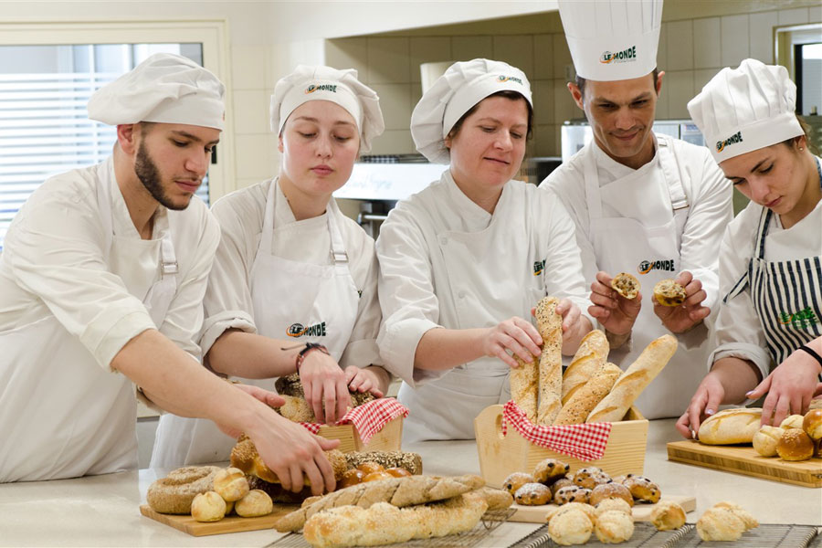
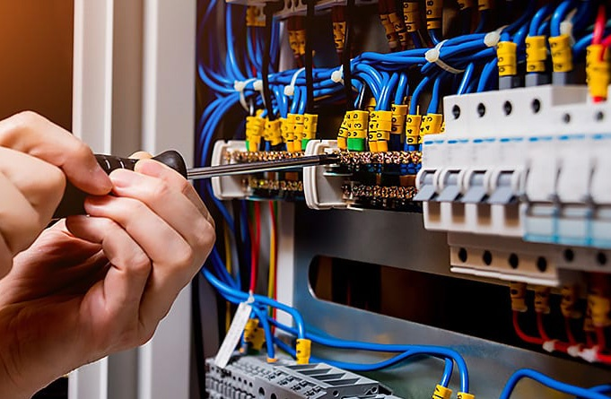
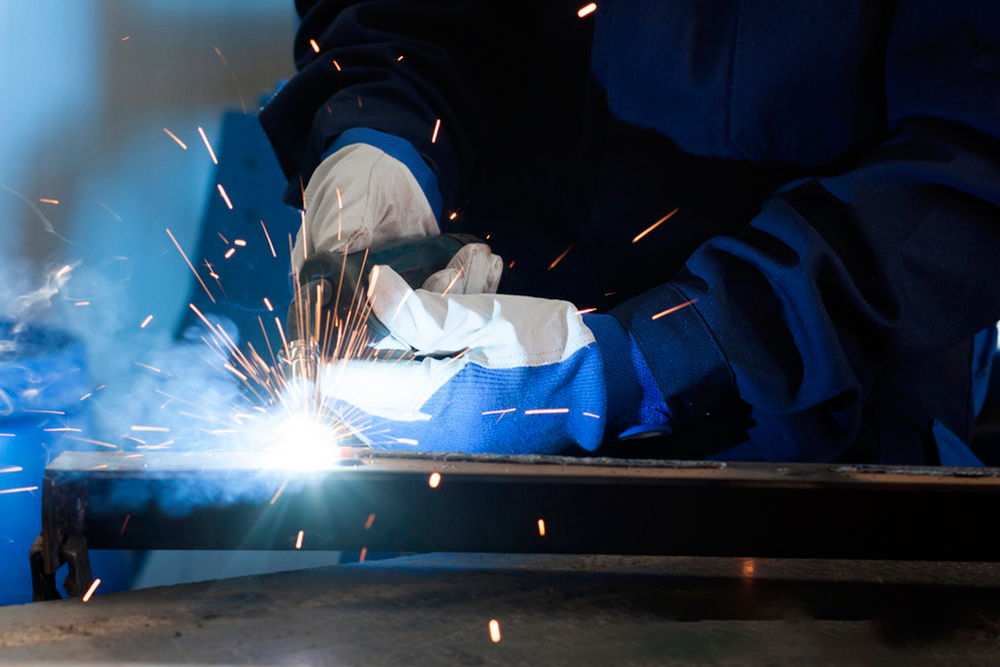
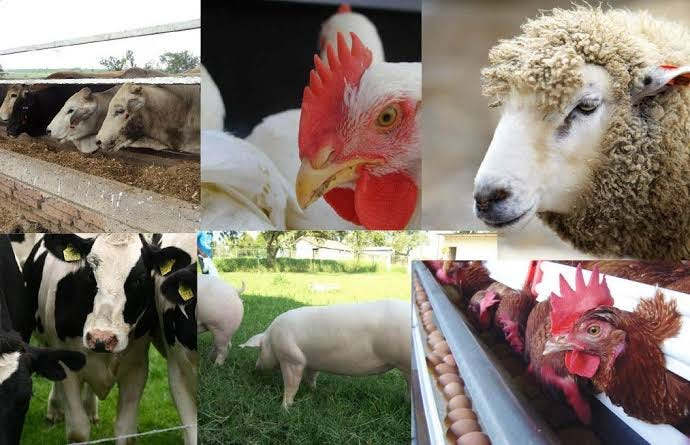
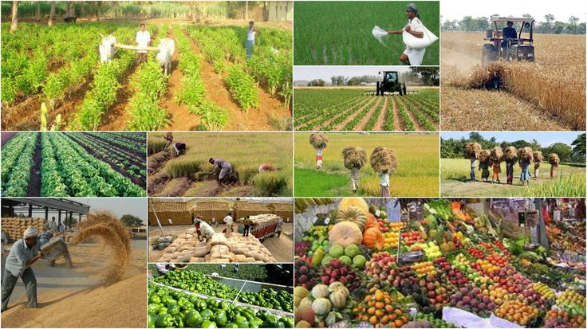

Technical-Vocational Livelihood (TVL) Strand
This website presents selected student outputs from the Technical-Vocational Livelihood (TVL) strand of Alimodian National Comprehensive High School.
Student Outputs
ICT: Web development, programming, and multimedia projects.
CSS: Computer assembly, troubleshooting, and networking tasks.

BPP: Baking, pastry preparation, and food presentation.

EIM: Electrical wiring, installation, and maintenance works.

SMAW: Welding techniques and metal fabrication.
Housekeeping: Hospitality services and housekeeping operations.

Animal Production: Livestock care and farm management.

Agricultural Crops: Crop production and sustainable farming.

Carpentry: Woodworking and basic construction projects.